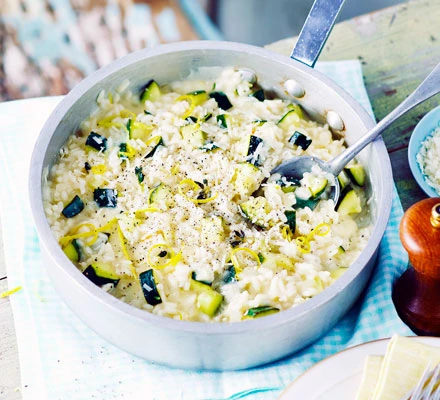

An easy vegetarian one-pot risotto - simply stir in your seasonal veg, simmer and enjoy
- 50g butter
- 1 onion, finely chopped
- 1 large garlic clove, crushed
- 180g risotto rice
- 1 vegetable stock cube
- Zest and juice of 1 lemon
- 2 lemon thyme sprigs
- 250g courgette, diced
- 50g vegetarian Italian-style hard cheese
- 2 tbsp crème fraîche
- Melt the butter in a deep frying pan. Add the onion and fry gently until softened for about 8 mins, then
add
the garlic and stir for 1 min. Stir in the rice to coat it in the buttery onions and garlic for 1-2
mins.
-
Dissolve the stock cube in 1 litre of boiling water, then add a ladle of the stock to the rice, along
with
the lemon juice and thyme. Bubble over a medium heat, stirring constantly. When almost all the liquid
has
been absorbed, add another ladle of stock and keep stirring. Tip in the courgette and keep adding the
stock,
stirring every now and then until the rice is just tender and creamy.
-
To serve, stir in some seasoning, the lemon zest, vegetarian Italian-style hard cheese and crème
fraîche.